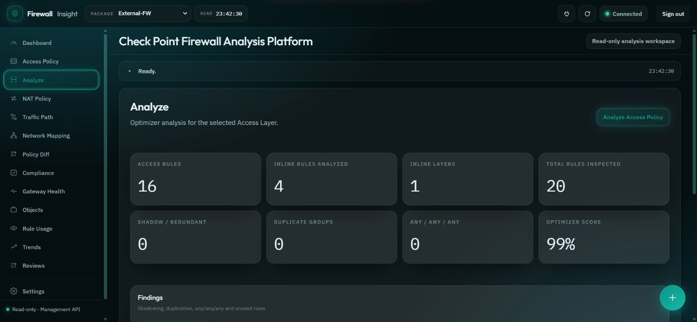

Read the rulebase clearly
See Access and NAT policy as returned, with Inline Layer context and findings worth reviewing.
ACCESS / NATCHECK POINT POLICY INTELLIGENCE
Turn complex firewall data into a clearer view. Explore policy, traffic paths, topology, and review evidence in one connected workspace.
Read-only by design · Never changes Check Point policy
A heuristic computed here, not a Check Point score.
192.168.10.50 → unverified-destination.invalid · TCP/443
Card data transcribed from real project screens and the poster (External-FW lab · 15 Oct 2026). The network map is simplified.
Built on real APIs and tooling
WHY IT MATTERS
When the rulebase, topology, and review results live in separate places, even simple questions take time. Firewall Insight connects the context you need to investigate.
It began with real Infrastructure Security work: moving about 600 and 300 legacy rules to a Check Point cluster without knowing which were redundant or shadowed — and any tool used must not modify the customer’s systems.
See Access and NAT policy as returned, with Inline Layer context and findings worth reviewing.
ACCESS / NATSimulate a path using source, destination, and service to inspect a possible matching rule and its confidence level.
TRAFFIC PATHCompare snapshots, run compliance checks, and revisit reviews to support decisions with traceable evidence.
DIFF / REVIEWONE CONNECTED VIEW
Move between policy, risk, and network context. Dive into the part your team needs to understand next.
Analysis stays within each layer, so rules in different Inline Layers are never compared as siblings — and Unused is a review candidate, not a delete instruction.
Only read commands reach the Management API. A test fails the build if add, set, delete, publish or install-policy appears in the source.
Every condition evaluated — confirmed
Kleene three-valued logic across Inline Layers and implied rules. When a condition can’t be evaluated from configuration, the tool says unknown instead of guessing.
A deterministic parser — no language model, and the question never leaves the app. Missing a piece? It asks back instead of guessing.
One review composes analysis, change, compliance and gateway health. A section that couldn’t be read is recorded as not read — never as an empty result.
Rules are matched by uid, never by number — so inserting one rule doesn’t report every rule below it as rewritten, and incomparable reach gets its own category.
14 pages, one app
SEE IT IN ACTION
Explore captured Firewall Insight screens from the project. They show the interface and data at the time each capture was taken.
The real interface, running in your browser on sample lab data.
01 / ANALYZE
Inspect duplicate, shadowed, and overly broad rules. Analysis stays within each layer so findings keep their policy context.

RESEARCH · NCCY 2026
Firewall Insight was evaluated against known answers — on synthetic policies and on a real lab gateway. The goal isn’t to answer every question; it’s never to be confidently wrong.
7,050 rules with known answers · 730 can never be hit
Recall against all unreachable rules · no false reports in either mode
Against a gateway model, 36,000 connections · pick the share of unknown conditions
22 cases on a 16-rule outer policy
กรอบงานตรวจสอบนโยบายไฟร์วอลล์แบบอ่านอย่างเดียวที่คำนึงถึงความไม่แน่นอนของการประเมินกฎ
Figures from paper v12. Every test policy was written for the project — no customer data.
FROM DATA TO DECISION
A clear path from reading policy to reviewing the evidence, with people always making the final decision.
Read through the Check Point Management API. Optionally enable the Gaia API for gateway information.
Investigate rules, topology, traffic paths, and findings in connected context.
Compare snapshots, check selected profiles, and keep review history for later inspection.
Architecture
Snapshots and reviews stay on this machine as JSON. Nothing is written back to Check Point.
The ClusterXL lab it was tested on
Simplified path, not full wiring · Management HA and NAT live in the same lab.
Insight for humans.
Decisions by humans.
GO DEEPER
Explore the source code, architecture, setup guide, and full feature details on GitHub. See how Firewall Insight approaches policy understanding.
github.com/IyolrymtnXmo/firewall-insight